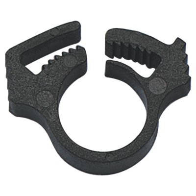
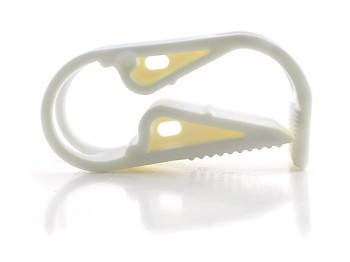

hose clamps revision 4695
^ Parts infobox ^^
| image | Hose clamp 1.jpg |
| designer | |
| date | |
| parts | |
| techniques | |
| tools | |
| git | |
| stl | |
Introduction
Challenges
Adapting existing systems to standard Replimat push fit connectors often requires hose clamps. Hose clamps are also sometimes needed to shut off flow through a system.
Approaches
3D print hose clamps.

